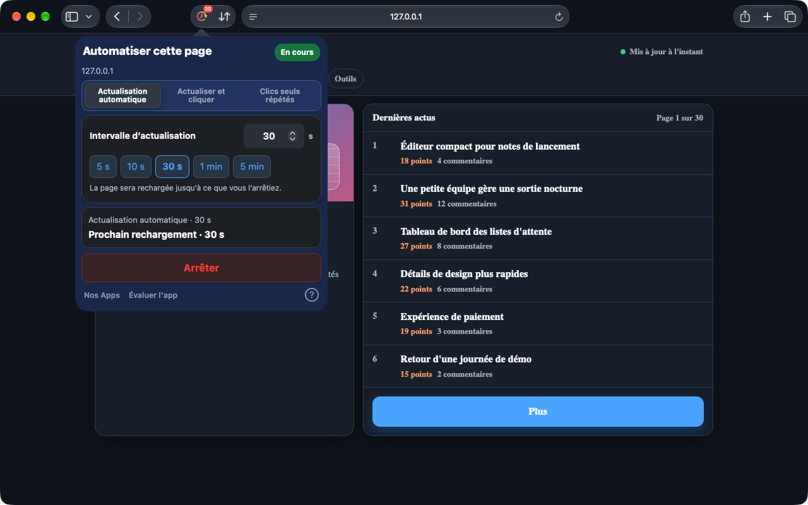
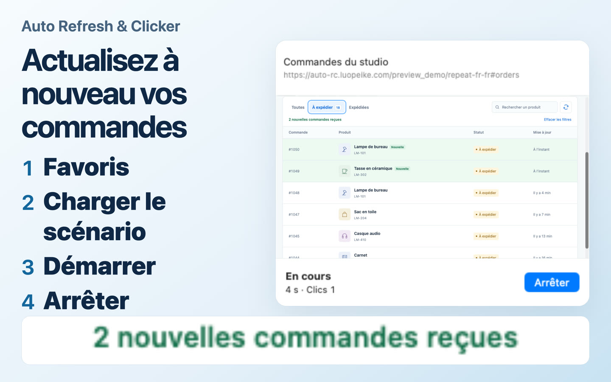
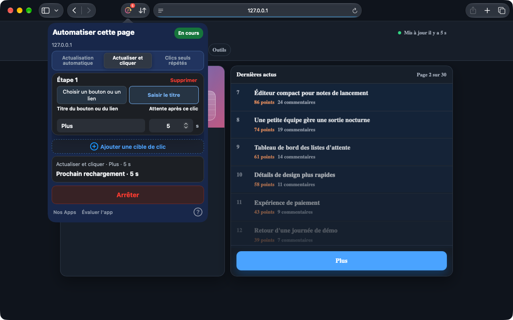
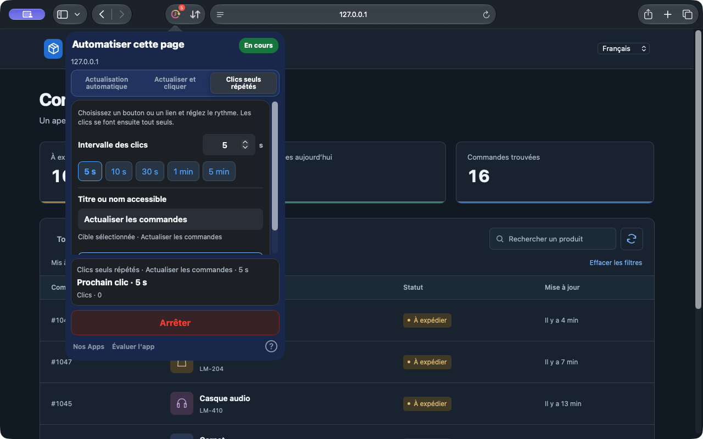

Actualisation automatique
Choisissez un intervalle prédéfini ou précis pour garder vos tableaux de bord, stocks et suivis à jour.
Configurer l’actualisation automatiqueOuvrez votre liste de commandes depuis les favoris. Chargez les étapes enregistrées pour cliquer sur son bouton d’actualisation à intervalles fixes, dans l’app ou Safari.
Enregistrez plusieurs scénarios nommés pour une même URL complète. À votre prochaine visite, chargez celui qui vous convient, vérifiez les étapes et lancez-le. Les scénarios restent dans l’app ou le navigateur où vous les avez créés.
Lire le guide de configuration

Choisissez un intervalle prédéfini ou précis pour garder vos tableaux de bord, stocks et suivis à jour.
Configurer l’actualisation automatique
Sélectionnez un bouton ou un lien, ou saisissez son titre. Après l’actualisation, les clics suivent votre ordre, avec une attente après chaque étape.
Configurer l’actualisation avec clics
Répétez les clics sans recharger la page. Même une icône se sélectionne : choisissez le rythme et laissez la liste s’actualiser.
Configurer les clics répétésiPhone / iPad · Mac
Ouvrez l’app après l’installation, puis activez l’extension dans les réglages Safari et autorisez l’accès au site.
Choisissez un mode, puis l’intervalle ou l’attente après chaque étape. Pour les clics, sélectionnez un bouton ou un lien sur la page, ou saisissez son titre.
Lancez la tâche et vérifiez son état et le compte à rebours. Arrêtez-la ou appliquez vos modifications à tout moment.
Nommez vos favoris et retrouvez les pages récemment consultées. L’historique reste sur cet appareil jusqu’à sa suppression. Vous pouvez suspendre l’enregistrement ou effacer les visites tout en conservant vos favoris et scénarios.
ConfidentialitéOuvrez la page dans l’app sur iPhone, iPad ou Mac, ou utilisez l’extension dans un onglet Safari. Chrome sur ordinateur dispose de sa propre extension.
Sélectionnez une icône sur la page ou saisissez le nom du bouton ou du lien. Si une partie du nom change, activez les jokers et remplacez cette partie par *. Le scénario s’arrête si aucun élément utilisable ne correspond ou si plusieurs correspondent.
Ouvrez une fois l’app installée, puis vérifiez Réglages Safari → Extensions. Utilisez Safari 15.4 ou ultérieur. Si elle reste absente, contactez le support en indiquant les versions de macOS, Safari et de l’app, ainsi que la source d’installation.
La version Safari actuelle permet de modifier la configuration puis d’appliquer les changements. Le résumé affiche la tâche active. Choisissez Arrêter pour la terminer.
Consultez chaque boutique pour les prix et la compatibilité.